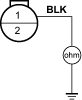

- Disconnect the radiator fan motor 2P connector.
- Measure the voltage between fan motor 2P connector terminal No. 2 and body ground.
RADIATOR FAN MOTOR 2P CONNECTOR

Wire side of female terminals
Is there battery voltage?
YES – Go to step 9.
NO – Repair an open in the wire between radiator fan relay 4P socket terminal No. 3 and radiator 2P connector terminal No. 2. 
- Disconnect the jumper wire.
- Test the radiator fan motor (see page 10-4).
Is the fan motor OK?
YES – Repair an open in the wire between radiator fan motor 2P connector terminal No. 1 and body ground G301.
NO – Replace the radiator fan motor.
- Disconnect the radiator fan switch A 2P connector.
- Turn the ignition switch ON (II).
- Measure the voltage between the radiator fan switch A 2P connector terminal No. 1 and body ground.
RADIATOR FAN SWITCH A 2P CONNECTOR

Wire side of female terminals
Is there battery voltage?
YES – Go to step 4.
NO – Repair open in the wire between the radiator fan switch A connector and under-hood fuse/relay box.
- Turn the ignition switch OFF and check for continuity between the radiator fan switch A 2P connector terminal No. 2 and body ground.
RADIATOR FAN SWITCH A 2P CONNECTOR

Wire side of female terminals
Is there continuity?
YES – Replace radiator fan switch A.
NO – Check for open in the wire between the radiator fan switch A connector and body ground. If the wire is OK, check for poor ground at G301.